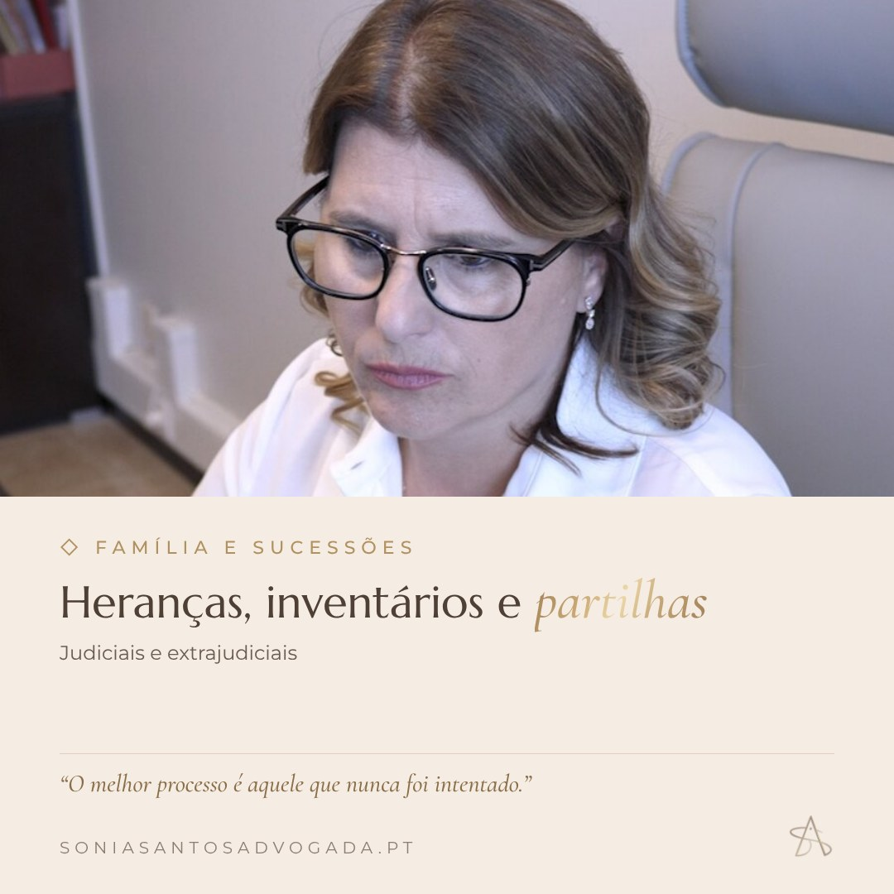
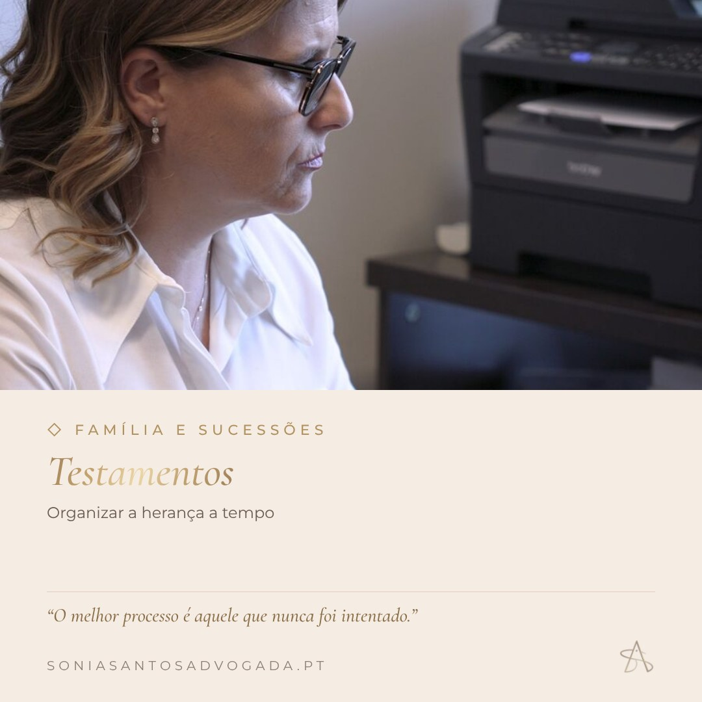

Tudo o que falta validar com a Dra. e a proposta para o lançamento das redes sociais: posicionamento, público, tipos de conteúdo, os primeiros posts prontos a publicar e o calendário das primeiras três semanas e o passo a passo do WhatsApp Business.
01
Reunião: o que validar com a Dra.
Marque cada ponto e escreva a resposta durante a reunião. As notas ficam guardadas neste navegador; no fim, copie o resumo e envie-o para atualizarmos o site.
0 de 0 pontos tratados
Agenda e marcações
Pagamentos
Reuniões e videochamadas
WhatsApp e atendimento
Opções: 1) respondem no escritório, com mensagens automáticas de boas-vindas e ausência (grátis, WhatsApp Business); 2) chatbot que responde ao básico (horário, morada, marcação) e passa a conversa a uma pessoa; 3) misto: automático fora de horas, pessoas em horário de expediente. Um chatbot nunca deve dar aconselhamento jurídico.
Contactos e dados do site
Textos e conteúdo
Redes sociais e anúncios
Contas e acessos
Apagar todas as respostas guardadas neste navegador?
02
Estratégia
O que queremos que as pessoas pensem quando veem um post da Dra. Sónia.
“A advogada que ajuda a resolver antes de complicar.” Próxima, rigorosa e focada na prevenção, sobretudo em família, heranças e empresas.
Público 1
Famílias da região
Santa Maria da Feira e arredores. Heranças, partilhas, testamentos, divórcios e responsabilidades parentais.
Público 2
Portugueses no estrangeiro
Emigrantes com assuntos por tratar em Portugal: heranças, procurações, registos. Consultas por videochamada.
Público 3
Pequenas empresas
Sobretudo no LinkedIn. Contratos, sociedades e cobranças, com uma abordagem preventiva.
Tipos de conteúdo
Educar“Sabia que”, mitos, dicas
40%
Situações“Reconhece-se nisto?”
25%
Proximidadeescritório, equipa, bastidores
20%
Serviços e sitemarcações, novidades
15%
03
Instagram: os primeiros 9 posts
Toque numa imagem do perfil para ver o post. Cada post tem a legenda pronta a copiar e as imagens para descarregar.
04
Calendário das primeiras 3 semanas
Instagram 3 vezes por semana, LinkedIn 2 vezes. Melhor horário: entre as 12h e as 14h ou entre as 19h e as 21h.
Semana
Segunda
Terça
Quarta
Quinta
Sexta
1 · Lançamento
IG01 Apresentação
INL4 Apresentação
IG02 Família (carrossel)
INL1 Novo site
IG03 Novo site
2 · Prevenção
IG04 Antes de assinar
INL2 Citação
IG05 Escritório
INL3 Empresas
IG06 Citação
3 · Proximidade
IG07 Mito ou facto
—
IG08 Vive fora
—
IG09 Videochamada
05
LinkedIn: 4 posts
Formato quadrado, tom mais institucional e escrito na primeira pessoa, para o perfil pessoal da Dra. Sónia.
06
Anúncios: Google, Facebook e Instagram
Tudo pronto a copiar: imagens, textos, palavras-chave, segmentação e orçamento. Textos informativos, sem preços, promessas ou superlativos, como exige a Ordem dos Advogados.
1 · Google Ads
Pesquisa local
Aparece a quem procura “advogado heranças”, “testamento” ou “divórcio” na zona.
10–15 €/diaobjetivo: pedidos de marcação
2 · Meta (Facebook + Instagram)
Família e heranças
3 anúncios para pessoas da região e emigrantes, a levar para a página /consulta.
5–10 €/diaobjetivo: tráfego / leads
3 · Instagram
Ganhar seguidores
Promover o perfil com o anúncio “dicas jurídicas” para criar audiência.
3–5 €/diaobjetivo: visitas ao perfil
Valores de arranque sugeridos para testar 2 a 4 semanas; ajustar depois conforme os pedidos que chegam. Começar só depois de: notificações do Netlify ativas, contactos reais no site e Google Ads / Pixel ligados no aviso de cookies.
Google Ads · Pesquisa
Em ads.google.com, criar campanha Pesquisa com objetivo Leads. Desligar “Rede de Display” e “Parceiros de pesquisa”.
Localização: Santa Maria da Feira + raio de 25 km (Espinho, Ovar, S. João da Madeira, Oliveira de Azeméis, sul de Gaia), com a opção “Presença: pessoas que estão ou estão regularmente nas localizações”.
Idioma: português. Licitação: “Maximizar cliques” nas primeiras 2 semanas, depois “Maximizar conversões”.
Criar um grupo de anúncios por tema (abaixo), cada um com um anúncio responsivo: colar os títulos e as descrições.
Adicionar os sitelinks, as frases de destaque, as imagens e as palavras-chave negativas ao nível da campanha.
Criar a conversão “Pedido de marcação” e enviar o ID AW-… e o rótulo, para ligar no site.
Heranças e partilhas12 títulos · 4 descrições · 7 palavras-chave
Logótipo quadrado: usar o avatar dourado ou creme (1080×1080).
Meta · Facebook e Instagram (família e heranças)
Em business.facebook.com → Gestor de Anúncios → campanha Tráfego (ou Leads quando o Pixel estiver ligado). Categoria especial: nenhuma.
Público: Portugal, 30–65 anos, Santa Maria da Feira + 25 km. Para o anúncio A3, um segundo conjunto: portugueses a viver em França, Suíça, Luxemburgo, Alemanha e Reino Unido (idioma português).
Posicionamentos: Advantage+, com a imagem 4:5 para o feed e a 9:16 para Stories e Reels.
Um conjunto de anúncios com A1 e A2; outro com A3. Deixar correr 7 dias antes de mexer.
A casa dos pais ficou para os irmãos… e agora, quem decide?
Partilhas, inventários e acordos entre herdeiros, tratados a tempo e com clareza. A Dra. Sónia Alexandra Santos é advogada desde 2005, com escritório em Mozelos, Santa Maria da Feira, e consultas também por videochamada.
Quer deixar tudo organizado para que os seus filhos não tenham de discutir?
Um testamento preparado a tempo, dentro do que a lei permite, ajuda a evitar desentendimentos na família. Advocacia preventiva em Mozelos, Santa Maria da Feira, ou por videochamada.
Vive fora de Portugal e tem assuntos por resolver cá?
Heranças, partilhas e procurações podem começar com uma consulta por videochamada, em português ou inglês. Escritório em Mozelos, Santa Maria da Feira.
Siga para dicas práticas sobre família, heranças e contratos, explicadas de forma simples pela Dra. Sónia Alexandra Santos, advogada desde 2005 em Santa Maria da Feira.
"O melhor processo é aquele que nunca foi intentado."
Publicar o post A4 no perfil (ou usar o post 04 “Antes de assinar” e o 07 “Mito ou facto”, os mais úteis).
Na app do Instagram: Promover → objetivo Mais visitas ao perfil.
Público: Santa Maria da Feira + 25 km, 28–60 anos, interesses “família”, “imobiliário”, “empreendedorismo”.
3–5 €/dia durante 14 dias. Promover sempre os posts educativos, não os de serviços.
Regras para todos os anúncios
Informar, nunca prometer resultados (“ganhe o seu processo”, “resolvemos tudo”).
Sem preços, descontos ou “consulta grátis” nos anúncios.
Sem superlativos nem comparações (“a melhor advogada”, “a mais experiente”).
Nunca referir casos ou clientes, mesmo anónimos.
A Dra. aprova cada anúncio antes de ser publicado.
O que medir (semanal)
Pedidos de marcação recebidos por email (o campo “Origem” diz de que anúncio vieram).
Custo por pedido em cada plataforma e em cada grupo de anúncios.
Pesquisas que acionaram os anúncios (Google → Termos de pesquisa), para acrescentar negativas.
Novos seguidores e visitas ao perfil no Instagram.
Desligar o que não gera pedidos ao fim de 2 semanas e reforçar o que gera.
07
WhatsApp Business: passo a passo
Tudo para a Dra. deixar o WhatsApp do escritório completo e profissional: fotos, serviços no catálogo, mensagens automáticas e as configurações de privacidade. Marque cada passo à medida que o faz; o progresso fica guardado neste navegador.
0 de 0 passos feitos
Sónia Alexandra Santos · Advogada
Conta comercial · Serviços jurídicos
MensagemLigarPartilhar
Advogada desde 2005, com escritório em Mozelos, Santa Maria da Feira. Advocacia preventiva e de empresa, Família e Sucessões e Atos Notariais…
Catálogo


📍Rua Dr. Amorim, Ed. Casa do Povo, Loja G, Mozelos
🕘Aberto · seg. a sex.
🌐soniasantosadvogada.pt
Passo 1 · 10 minNúmero e aplicação
Usar um número só do escritório, não o telemóvel pessoal da Dra.
Instalar a app WhatsApp Business (ícone com “B”), não o WhatsApp normal. É gratuita.
Se esse número já tem WhatsApp normal: abrir a WhatsApp Business, escolher “Usar este número”. As conversas e grupos passam para a conta comercial.
Para responder no computador do escritório: Definições → Dispositivos ligados e ler o QR code em web.whatsapp.com (até 4 computadores com o mesmo número).
Passo 2 · 5 minFoto de perfil e capa
Em Definições → Ferramentas comerciais → Perfil comercial, tocar na foto e na capa.
A foto aparece num círculo pequeno em todas as conversas: o monograma lê-se melhor e mantém a mesma imagem em todas as redes.
Passo 3 · 10 minPerfil comercial
No mesmo ecrã Perfil comercial, preencher todos os campos. Perfis completos transmitem mais confiança.
Passo 4 · 20 minCatálogo de serviços
Em Ferramentas comerciais → Catálogo → Adicionar novo item. Para cada serviço: imagem, nome, descrição e link. Preço em branco: a Ordem dos Advogados não permite promoções e cada caso é diferente (só a consulta online pode ter o valor, se a Dra. aprovar).
No fim, partilhar o catálogo: no Instagram (link na bio) e na resposta rápida /servicos.
Passo 5 · 10 minMensagens automáticas
Em Ferramentas comerciais. Funcionam sozinhas e são gratuitas.
Passo 6 · 15 minRespostas rápidas
Em Ferramentas comerciais → Respostas rápidas → +. Depois, na conversa, basta escrever / e escolher. Poupam tempo e garantem que todos no escritório respondem da mesma forma.
Passo 7 · 5 minEtiquetas para organizar os contactos
Em Ferramentas comerciais → Etiquetas (ou carregar numa conversa → Etiquetar). Assim ninguém fica sem resposta e vê-se logo quem está à espera de quê.
Novo contactoainda não respondido
Marcação pendentepediu consulta, falta confirmar
Consulta marcadajá está na agenda
Aguarda documentospedimos documentos ao cliente
Clienteprocesso em curso
Vive foraconsultas por videochamada
Passo 8 · 10 minPrivacidade e sigilo profissional
Há documentos e dados de clientes no telemóvel: estas definições são obrigatórias.
Definições → Conta → Verificação em dois passos: ativar, com PIN de 6 dígitos e email de recuperação. Impede que alguém roube a conta.
Definições → Privacidade → Bloqueio da app (impressão digital ou Face ID): ativar.
Definições → Conversas → Visibilidade de multimédia: desligar, para que fotos e documentos de clientes não vão para a galeria do telemóvel.
Definições → Conversas → Cópia de segurança: ativar a cópia encriptada ponta a ponta.
Dispositivos ligados: rever uma vez por mês e terminar sessões que não reconheça.
Documentos recebidos: guardar no processo do cliente e apagar do telemóvel. Nunca falar de casos nem clientes nos Estados.
Passo 9 · 10 minLigar o WhatsApp a tudo
Ferramentas comerciais → Link curto: ativar e colar a mensagem pré-escrita abaixo. Dá um link wa.me/… e um QR code.
Enviar o número do WhatsApp para o substituirmos no site (botão flutuante, menu e contactos).